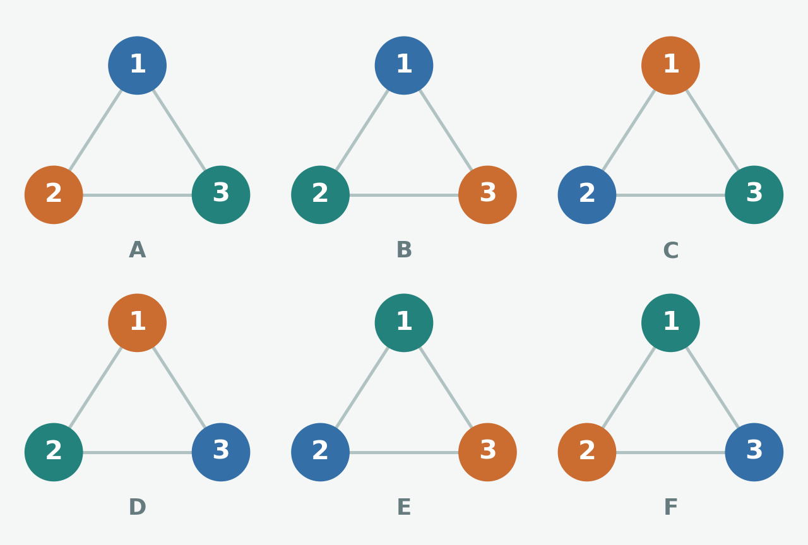
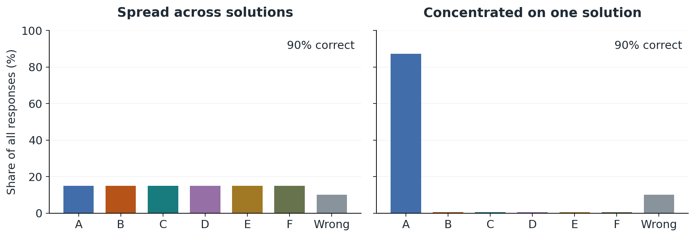
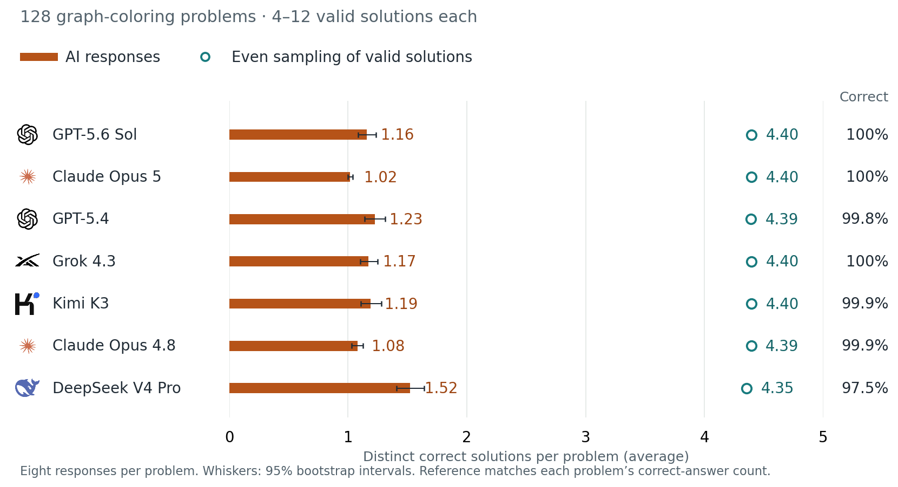
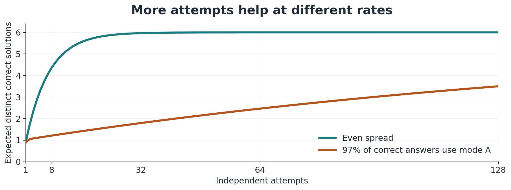

TL;DR: We tested seven frontier AIs on puzzles with several correct solutions. They were very good at getting the right answer, but often gave us the same few solutions over and over. Asking more times can help, but it might take many attempts to see something different. We also tried a way to keep those alternatives around during training: save each new correct solution and make sure the AI practices it as often as the others. In our experiments, this helped the AI get more answers right and find more ways to solve the problems.
When several answers are right, why does AI keep giving us the same one?
“It is better to solve one problem five different ways, than to solve five different problems one way.”
— George Pólya, as quoted by Marvin Minsky
Suppose you ask an AI to solve a math problem. It gets the answer right. Then you ask it to find another way to solve it, and it gives you essentially the same solution. That's a little disappointing. There might be five perfectly good ways to solve the problem, but you're only seeing one.
For a tool meant to help us explore, providing one correct response may not be sufficient. For example, a student may need another explanation, a programmer might want an alternative implementation, or an architect may need other designs that satisfy the same constraints. We need AI systems that can help us find alternatives, not just a single right way.
Consider a triangle with three numbered corners: node 1 at the top, node 2 at the bottom left, and node 3 at the bottom right. Color the corners with blue, orange and teal so that connected corners have different colors. Every pair is connected. How many different valid colorings are there?
Solution. There are three choices for node 1, two remaining choices for node 2, and one for node 3: 3 × 2 × 1 = 6 colorings. For example, blue / orange / teal and orange / blue / teal are both valid in node order 1 / 2 / 3. Because the nodes are numbered, swapping their colors counts as a different solution.

Figure 1. All six valid colorings of the numbered triangle. Each uses every color exactly once. This is a simplified illustration of the study’s graph-coloring tasks.
An AI that always returns coloring A can be perfectly correct while leaving five valid alternatives unexplored.
This example separates two questions: (1) How often is the model able to answer correctly? (2) How many different correct solutions can the AI produce?
“Variety’s the very spice of life,
That gives it all its flavor.”— William Cowper, The Task, Book II (1785)
This is the problem of mode collapse: when an AI’s outputs become concentrated on a few solutions. Here, a “mode” means a distinct answer or approach, defined by the task. The illustrative graph below shows two AIs with 90% accuracy. One spreads correct answers evenly across A–F; the other mostly repeats A.

Figure 2. Illustrative distributions: identical accuracy, very different variety. Letters identify the six coloring modes.
We found this pattern across all seven frontier AIs we tested, spanning GPT, Claude, Grok, Kimi and DeepSeek. In our recent study, we tested models on puzzles with multiple verifiable solutions, including graph coloring. Across these AIs, correct answers clustered around a few solutions.
For example, we asked OpenAI’s GPT-5.6 Sol to solve 128 graph-coloring problems eight times each. All 1,024 answers were correct. But each problem had 4–12 valid colorings, and the AI found only 1.16 distinct solutions per problem on average. When we compared pairs of answers to the same problem, 95.1% repeated a coloring.

Figure 3. Seven AIs, 128 Level-3 graph problems each, eight answers per problem. Whiskers: 95% bootstrap intervals. Reference: uniform sampling over valid colorings, matching each problem’s correct-answer count.
Earlier research found that training AI with human feedback made answers less varied on summarization and instruction-following tasks. Other researchers saw a similar loss of variety in writing tasks, as after AI edits, different people’s essays became more alike in style and meaning. Our puzzles give us a way to measure the gap between the answers the model gives and the set of correct solution modes.
Why does mode collapse happen? We think that this is a result of the way we train AI. In the setup we study, the AI first generates answers and then a checker scores those answers. The AI is then updated based on the checker-provided scores. However, a checker that only rewards correctness gives every valid solution the same score. It doesn’t care whether the answer is new or one that the AI has given a thousand times.
The training loop reinforces this problem. If the AI already tends to give one solution, that solution shows up more often in training and, as a result, gets more opportunities to be reinforced. As Figure 4 shows, an answer that gets ahead early in training can keep becoming more prevalent until other correct solutions rarely show up.
Figure 4. A possible training dynamic. Equal rewards alone do not force this loop.
If we ask the model more times, does this solve the problem? Sometimes. But extra attempts draw from the AI’s pre-existing preferences. If one alternative has a one-in-a-thousand chance on each independent attempt, even 100 attempts give only about a 9.5% chance of seeing it.

Figure 5. Independent toy draws at 90% correctness. Rare alternatives can take many attempts to discover.
Both toy AIs are correct on 90% of independent attempts. One spreads its correct answers equally across A–F; the other assigns 97% to A and 0.6% to each alternative.
Figure 5 shows how an AI’s underlying answer distribution affects how many different correct solutions it finds over repeated attempts. The curves compare an evenly spread AI with one that mostly repeats the same solution.
Our study asks whether we can prevent mode collapse. We ask, when an AI discovers a different way to solve a problem, can we make sure that the solution remains part of the AI’s training data? We call this approach mode replay. We save one example of each new correct solution, then make sure the AI practices it as often as the others. In our experiments, the AI got more answers right and found more ways to solve the problems. We can’t replay a solution it never finds, though. And the rules are much clearer for these puzzles than for something like writing, where two answers can look different and still say the same thing.
Sometimes you need a second explanation before a problem makes sense. Or your code works, but you want to see whether another implementation uses less memory or is easier to read. An architect can have a good design and still need another one when the budget changes. The point of asking for alternatives is to have something to compare, and moreover, to be able to make that choice about how to proceed ourselves (as humans).
Figures 1, 2, 4 and 5 are explanatory illustrations. Figure 3 reports results from our study.